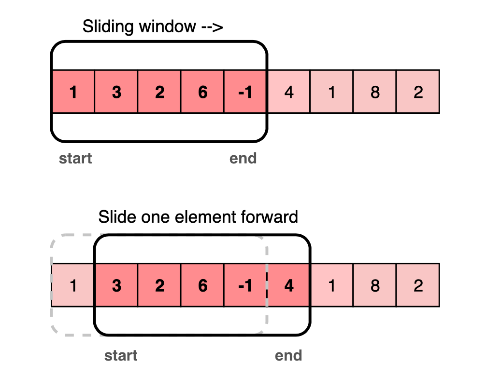
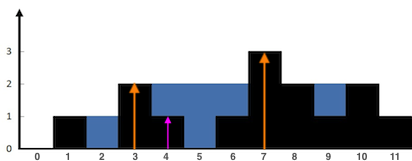
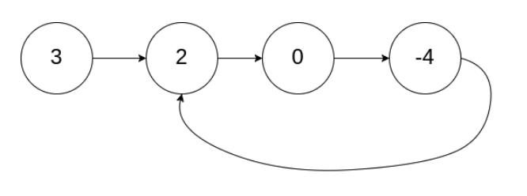
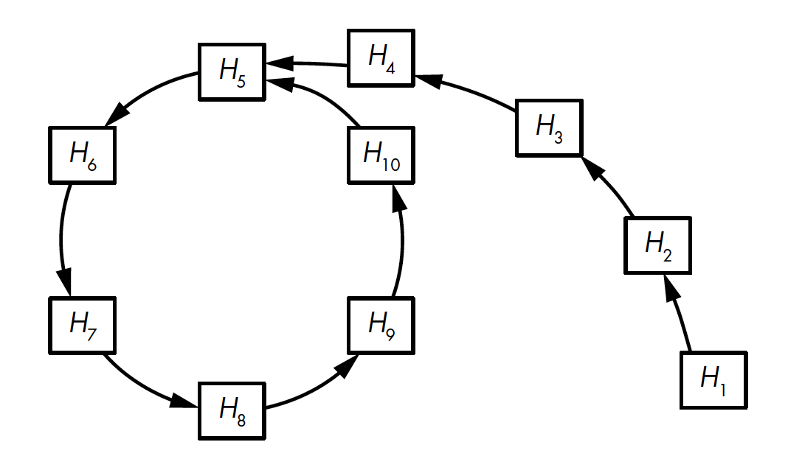

程序员面试题精解（4）— 双指针
双指针技巧是一种强大而优雅的算法策略，常用于高效地解决数组、链表和字符串类型的问题。由于其能够优化解决方案并降低时间复杂度，因此在编程面试中被广泛考察。
在解决问题时，我们通常可以使用暴力方法遍历所有可能的情况，但这通常导致较高的时间复杂度。双指针之所以强大，是因为它能巧妙地避免嵌套循环，减少不必要的比较和计算。掌握双指针技巧可以帮助你将时间复杂度从 \(O(n^2)\) 降低到 \(O(n)\)，这在面试中是非常有价值的优化。在实际面试中，能够识别出可以使用双指针解决的问题，并熟练地应用这一技巧，往往是区分普通候选人和优秀候选人的关键因素之一。
需要特别说明的是，这里的"指针"是一个通用概念，并不特指C/C++语言中的内存地址变量。在更广泛的计算机科学算法应用中，它也可以指代数组或字符串的索引变量，或者是遍历数据结构的迭代器。无论使用哪种编程语言，双指针技巧的核心思想都是一样的——使用两个移动的"指针"来优化搜索或遍历过程。
根据指针移动的方式和相对位置，我们可以将运用于单一数据结构的双指针技巧分为下列几种主要模式：
- 滑动窗口（Sliding Window）：两个指针维护一个窗口，通常用于解决子数组/子字符串问题
- 对撞指针：两个指针分别指向序列首尾元素，从两端向中间移动直到相撞为止
- 快慢指针（Fast & Slow Pointers）：两个指针以不同速度在数据序列中移动
每种模式都有其特定的应用场景和技巧，掌握这些模式将使你能够解决各种面试中遇到的、看起来很复杂的算法问题。下面让我们详细探讨每种模式及其典型例题。
滑动窗口
滑动窗口是双指针的一种特殊形式，使用两个指针表示一个窗口的起止边界。移动起点指针可以收缩窗口，而终点指针用于扩展窗口，通过动态调整窗口大小来解决问题。这种技巧在处理连续序列的问题上特别有效，如子数组、子字符串或子序列。滑动窗口的核心思想是将嵌套循环问题转化为单循环问题，通过维护窗口内的状态信息，避免了重复计算。
比如对于一个数组 \([1, 3, 2, 6, -1, 4, 1, 8, 2]\)，要求计算出长度为 \(k=5\) 的连续子数组元素和。最简单的方法就是写一个双循环，对每一个数组元素计算从它开始长度为 \(5\) 的子数组的和。由于对于输入数组的每个元素，我们都要计算 \(k\) 个元素的总和，因此上述算法的时间复杂度为 \(O(n∗k)\)，其中 \(n\) 是输入数组中的元素个数。
这种方法的低效之处在于，对于任意两个连续的大小为 \(5\) 的子数组，重叠部分（包含四个元素）将被求值两次。我们能否以某种方式重复使用重叠元素计算的总和呢？解决这个问题的有效方法是将每个连续的子数组可视化为一个包含 “5”个元素的滑动窗口。这意味着，当进入下一个子数组时，窗口向右滑动一个元素。因此，为了重复使用上一个子数组的总和，我们将减去从窗口中移出的元素，然后加上新包含在滑动窗口中的元素。这样，我们就不必通过整个子数组来求和，因此，算法复杂度将降低为 \(O(n)\)。
如下图所示，以上述输入为例，索引为 0-4 的子数组和索引为 1-5 的子数组之间有四个重叠元素。通过使用两个指针 start 和 end 标记窗口起止点，当窗口滑动时，窗口内元素的和就是原来的值减去索引为 0 的元素（1）、再加上索引为 5 的元素（4）之后的结果。 
滑动窗口典型的应用场景包括：
- 寻找最长/最短的满足特定条件的子数组或子字符串
- 计算满足特定条件的子数组或子字符串的数量
- 判断是否存在满足特定条件的子数组或子字符串
滑动窗口可以分为两种主要类型：
- 固定长度窗口：窗口长度保持不变，整体向前滑动，适用于"找出所有长度为 \(k\) 的..."类问题
- 可变长度窗口：窗口长度根据特定条件动态调整，适用于"找出最长/最短满足条件的..."类问题
固定长度滑动窗口
在窗口初始化后，固定长度滑动窗口的起点指针和终点指针总是同时向右移动，从而它的长度保持不变。下面给出了固定长度滑动窗口的代码模板
1 | start = 0 |
参考此模版，可以用 Python 实现求连续子数组元素和的函数如下
1 | def find_subarray_sum(arr: list, k: int) -> list: |
此函数的测试程序和输出结果如下
1 | result = find_subarray_sum([1, 3, 2, 6, -1, 4, 1, 8, 2], 5) |
1 | Sums of the size 5 subarray: [11, 14, 12, 18, 14] |
这个例子非常直观，很好地展示了滑动窗口的效率。下面来看看稍微复杂一点的问题：
给你一个整数数组
arr和两个整数k和threshold。
请你返回长度为 k 且平均值大于等于 threshold 的子数组数目。示例 1：
输入：arr = [2,2,2,2,5,5,5,8], k = 3, threshold = 4
输出：3（解释：子数组 [2,5,5]，[5,5,5] 和 [5,5,8] 的平均值分别为 4，5 和 6 。其他长度为 3 的子数组的平均值都小于 4)示例 2：
输入：arr = [11,13,17,23,29,31,7,5,2,3], k = 3, threshold = 5
输出：6（解释：前 6 个长度为 3 的子数组平均值都大于 5）
仔细阅读题目的要求，可以看出与前例并无实质性的变化。不同点仅在于现在不需要保存每个子数组的和，只要计算窗口元素的均值，且当均值不小于阈值时计数。所以可以将前例代码中数组列表 sums 换成计数变量，然后修改相关的操作就可以了。更新后的新函数如下：
1 | def numOfSubarrays(arr: list, k: int, threshold: int) -> int: |
此代码实现简单明了，只是在前例的基础上变更了三行（4，9 和 10）。两个示例都测试无误。实际上，这道题就是力扣 1343 - 大小为 K 且平均值大于等于阈值的子数组数目。虽然此题标记的难度中等，但是掌握了固定长度滑动窗口的技巧，它变得出乎意料地简单。
固定长度滑动窗口应用于字符串，也可以很快解决力扣 438号问题 - 找到字符串中所有字母异位词。题目给定一个字符串 s 和一个非空字符串 p，要求找到 s 中所有是 p 的字母异位词（anagram）的子串，返回这些子串的起始索引。由于字母异位词的长度固定为 p 的长度，我们可以使用固定大小的滑动窗口和字符计数来解决。
使用 Python 编程解决此题的具体思路是
- 使用两个标准字典分别存储目标模式串 p 和滑动窗口中的字符频率
- 滑动窗口时，添加新字符并移除旧字符（参考代码模版）
- 初始化第一个窗口及每次滑动窗口后后，检查是否匹配
- 使用字典相等性比较(==)来检查两个频率表是否相同
- 在字符计数归零时从字典中删除该字符，这确保字典比较的正确性
由此，可以写出答案如下：
1 | def findAnagrams(s: str, p: str) -> list[int]: |
虽然此函数实现代码长的多，但其流程完全与模版一致，应该很容易理解。另外，也可以如下导入 Python Counter 模块替换字典，缩短代码行数。
1 | from collections import Counter |
可变长度滑动窗口
可变长度滑动窗口的窗口长度不定，其起止指针的向右移动并不同步，可以根据条件动态调整。可变长度滑动窗口增强了灵活性，为解决许多问题提供了方便。以下是可变长度滑动窗口的代码模板
1 | start = 0 |
应用可变长度滑动窗口的一个典型例子是力扣 3 - 无重复字符的最长子串。此题给定一个由英文字母、数字、符号和空格组成的字符串 s ，请你找出其中不含有重复字符的最长子串的长度。比如输入 s = "abcabcbb"，输出 3，因为无重复字符的最长子串是"abc"；而输入`s = "bbbbb"时，输出为 1。
本题的关键在于确保滑动窗口内没有重复字符，其具体的解题思路有以下几点：
- 一开始起止指针都为 0， 向右移动终点指针，将右侧新字符加入当前窗口并记录该字符个数。
- 如果该窗口中该新字符的个数多于 1，则右移起点指针缩小窗口，并更新窗口中对应字符的个数。
- 如果该新字符的个数仍然多于 1，继续第二步右移起点指针，直到新字符的个数为 1。
- 更新无重复字符的最长子串长度。
- 如果还没到数据序列末尾，继续右移终点指针，回到第一步重复以上过程。
按照此思路，套用代码模版的 Python 实现如下
1 | def lengthOfLongestSubstring(s: str) -> int: |
本题还有另一种解法。其实，当发现新加入的字符有重复时，右移起点指针不必一个个的加。我们可以记录每个字符最新出现的位置索引值，如果该值在窗口中，我们一次性地将起点指针重置到此位置。如下所示，这样写出的函数更简洁
1 | def lengthOfLongestSubstring2(s: str) -> int: |
可以看到，第二种解法还是遵循可变长度滑动窗口的代码模版的基本结构，只是不再需要用第二个while循环来缩小窗口，也不必定义专门的数据结构追踪当前窗口的状态信息。确实是一个巧妙的设计。这两个答案在力扣网站提交都通过无误。
可变长度滑动窗口应用于数组，能轻松解决长度最小的子数组（力扣 209）问题。题目要求是
给定一个含有 n 个正整数的数组和一个正整数 target 。
找出该数组中满足其总和大于等于 target 的长度最小的子数组，并返回其长度。如果不存在符合条件的子数组，返回 0 。
充分理解了可变长度滑动窗口的算法精髓，我们就可以直接套用代码模版，得到下面的 Python 实现
1 | def minSubArrayLen(target: int, nums: list[int]) -> int: |
此代码清晰展示了窗口大小的动态化调整过程。通过两个阶段操作：先扩展窗口直到窗口内元素和不小于目标值target的条件，然后移动起点指针收缩窗口寻找最优解minLen。这就是可变长度滑动窗口的常见应用。
对撞指针
对撞指针通常从数组或数据序列的两端开始，向中间移动。这种模式常用于有序数组中寻找元素对或三元组，但也可用于某些特定的未排序数组问题。对撞指针之所以高效，是因为它通过两个指针的面对面移动来缩小搜索空间。当我们从两端向中间移动时，可以根据当前状态决定移动哪个指针，从而避免了不必要的计算。
这种技巧在以下场景特别有用：
- 判断回文字符串
- 查找有序数组中满足特定条件（如和为特定值）的元素对
- 三数之和、四数之和等问题
- 容器盛水问题（这个问题不需要数组有序）
- 接雨水问题（这个问题也不需要数组有序）
对撞指针的典型实现模式是：
- 初始化左指针指向数据开头，右指针指向数据末尾
- 在循环中，根据两个指针所指元素的特性决定移动哪个指针
- 当两个指针相遇或交叉时，结束循环
据此得到的对撞指针伪代码模板如下所示
1 | left = 0 |
模板给出了程序设计的思路和框架，具体到各个问题可以做相应的调整。以下对常用的问题场景作进一步的说明和讲解。
判断回文字符串
验证回文串（力扣 125）是演示对撞指针的最直观的例子。不考虑大小写及非字母数字字符，正反着读都一样的字符串就是回文串。比如“A man, a plan, a canal: Panama”，拿掉标点符号和空格，再全部变成小写字母后就变成回文串“amanaplanacanalpanama”。
很明显，基于其对折后完全相同的性质，使用对撞指针可以快速验证回文串。设置两个指针对向移动，并各自跳过非字母数字字符，它们每次指向的两个字符必须一样，否则就不是回文串。此思路变成 Python 代码就是
1 | def isPalindrome(s: str) -> bool: |
如前所述，虽然程序流程与模板并不一一对应，但是整体框架结构是完全一致的。
有序数组两数和
力扣 167 - 两数之和 II - 输入有序数组给出了一个简单的应用对撞指针解数值相关题目的例子。题目给出一个下标从 1 开始的已按非递减顺序排列的整数数组，请你从数组中找出满足相加之和等于目标数的两个数的下标（假设每个输入只对应唯一的答案）。
了解对撞指针，利用数组已排序的性质，可以快速解出这道题。我们先将左端最小值与右端最大值相加，如果和比目标数大，左移右指针，测试下一个小一点的和数；如果和比目标数小，右移左指针测试下一个大一点的和数；如果和等于目标数，就返回左右指针对应的索引值。继续此过程直到两个指针重合。由此得到的 Python 函数实现如下
1 | def twoSum(self, numbers: list[int], target: int) -> list[int]: |
注意，因为题目说明了输入对应唯一的答案，所以在while循环中一定会遇到和为目标数使函数返回的条件。对于不同的要求，要记住在循环结束后加上相应的返回语句。
和为零的三元组
对撞指针还能帮助解决多元数之和的面试题，比如三数之和（力扣 15）。此题需要找到整数数组中所有和为 0 且不重复的三元组。
为了沿用对撞指针模式，首先，我们要对数组进行排序，然后每次迭代一个数字。假设在迭代过程中，当前的数字是 “\(x\)”，那么我们需要找到 “\(y\) ”和 “\(z\)”，使得\(y+z=-x\)。由此将其转化为“两数之和配对”问题。另外为了满足不重复的要求，为此必须跳过任何重复的数字。由于数组先排序好了，所以所有重复的数字都会挨在一起，可以很容易跳过。三数之和问题答案的 Python 函数实现如下
1 | def threeSum(self, nums: list[int]) -> list[list[int]]: |
代码说明：
- 这里应用 Python 内置排序函数
sort()实现排序。 - 程序设计有两个循环：外面的
for循环遍历不重复的 \(x\)，内部while循环寻找不重复的 \(y\) 和 \(z\)。 - 内部
while循环的实现可参考对撞指针的代码模版。 - 此程序的时间复杂度为 \(O(n∗\log{n}+n^2)\)，渐近等价于 \(O(n^2)\)
- 数组排序的时间复杂度为 \(O(n∗\log{n})\)
- 双循环的时间复杂度为 \(O(n^2)\)
盛最多水的容器
前面两个例子中的数组都需要排序，但是对一些特定的问题，即使数组无序也能采用对撞指针解决，比如力扣 11 - 盛最多水的容器。题目大意是，给定 \(n\) 个非负整数 \(a_1,a_2,\dots,a_n\)，每个数代表坐标中的一个点 \((i,a_i)\)；在坐标内画 \(n\) 条连接端点 \((i,0)\) 和 \((i,a_i)\) 垂直线；问其中哪两条线可使得它们与 \(x\) 轴共同构成的容器容纳最多的水。如下图，以输入数组 \([1,8,6,2,5,4,8,3,7]\) 为例，输出应当为 \(49\)，因为由 \((2,8)\) 和 \((9,7)\) 两条线构成的容器能容纳的水量最大。

从上图可以看到，容器容纳的水量 = 左右两端较低直线的高度 x 两端直线之间的距离。使用对撞指针求解时，我们应该移动较低直线所在的指针位置，从而可能得到更大的高度和容量，最终获取其中最大值。具体步骤如下：
- 初始化对撞指针，使两个指针指向数组开始和结束位置。
- 计算当前容器容纳的水量，保存以备后续更新最大水量值。
- 判断左右指针对应的垂直线高度值大小
- 如果左指针指向的直线高度比较低，则将左指针右移。
- 如果右指针指向的直线高度比较低，则将右指针左移。
- 如果遇到左右指针相撞，跳出循环，返回最大的面积。
- 指针移动后，回到第二步重复。
遵循这些步骤的 Python 实现如下
1 | def maxArea(height: list[int]) -> int: |
以上代码在力扣网站提交后通过， 但是执行用时较长，约 120-160ms，属于最慢的 10-20%一类答案。有没有更快的方案呢？答案是肯定的。其实在我们移动左右指针时，如果下一个高度值更小，可以直接跳过，因为这时得到的容量只会更小。基于此观察，可以在上面第三步时加入while语句，继续移动指针直到找到一个更大的高度或指针相撞才停止。由此修改过的代码如下（注意新加入的 9-11 和 14-16 行）
1 | def maxArea_fast(height: list[int]) -> int: |
以上优化后的答案提交也通过无误，执行用时约 30ms，击败了 95% 的其他答案☺️。
柱子排列接雨水
力扣 43 - 接雨水问题可能是对撞指针最优雅的应用，解法也不要求数组排序。题目的描叙很简短，给定 \(n\) 个非负整数表示每个宽度为 1 的柱子的高度图，计算按此排列的柱子，下雨之后能接多少雨水。如下图所示，给定柱子高度排列 \([0,1,0,2,1,0,1,3,2,1,2,1]\)，在这种情况下，可以接 6 个单位的雨水（雨水以蓝色部分表示）

这道题乍一看毫无头绪，但如果单独观察每一个柱子能够接住的雨量，就可以发现规律。实际上，每一个柱子能够接住的雨水的高度，取决于该柱子左侧最高柱子和右侧最高柱子中较矮的那个柱子的高度。比如，上面的例子中第五个柱子（索引值为 4）的高度为 1。它左边最高柱子为 2（索引值为 3），右边最高柱子为 3（索引值为 7），左边的那个较矮。用这个较矮的值减去第五个柱子自身的高度 1，得到 1 就是第五个柱子接雨量。只要从头遍历一遍，求出每一个柱子接雨量，相加之后就是总雨水的体积了。
如何求出每个柱子左侧最高的柱子和右侧最高的柱子的数值呢？在遍历每个柱子时，用两个小一点的内循环去向左右寻找当然是可以做到的。但是这种暴力解法的时间复杂度是 \(O(n^2)\)，在力扣网站提交后会超时，无法通过。
应用对撞指针我们能巧妙地将时间复杂度降到 \(O(n)\)。如果从两端开始，记录左侧最高柱子的高度（leftMax）和右侧最高柱子的高度（rightMax）。那边较小那边就可以向中间移动，移动后如果新柱子不高于原来该侧的最高值，就可以马上计算出该柱子的接雨量（因为另一侧已经高于该侧当前最高值），否则更新该侧的最高值更新记录再次与另一侧的最高值比较。重复此过程直到左右指针相撞，这样我们就执行一次单循环计算，就能累加出总接雨量。对应的 Python 程序如下
1 | def trap(self, height: List[int]) -> int: |
以上程序大致还是遵循模版的，只是针对具体场景做了相应变化。代码提交后通过顺利✅，运行时间只有 3ms 🚀，打败了 99% 的其他答案😊。
据说这道接雨水问题是大厂面试的高频题，值得细细品味。为了更好地理解上面的答案，特地制作了下面的表格演示输入为\([4,2,6,3,2,5]\)时，循环内每一步的变化
| 循环轮次 | 0 | 1 | 2 | 3 | 4 | 5 | 左侧最高 (leftMax) | 右侧最高 (rightMax) | 接雨量 (count) |
|---|---|---|---|---|---|---|---|---|---|
| 0 | 4 (left) | 2 | 6 | 3 | 2 | 5 (right) | 4 | 5 | 0 |
| 1 | 4 | 2 (left) | 6 | 3 | 2 | 5 (right) | 4 | 5 | 2 |
| 2 | 4 | 2 | 6 (left) | 3 | 2 | 5 (right) | 6 | 5 | 2 |
| 3 | 4 | 2 | 6 (left) | 3 | 2 (right) | 5 | 6 | 5 | 5 |
| 4 | 4 | 2 | 6 (left) | 3 (right) | 2 (left) | 5 | 6 | 5 | 7 |
快慢指针
快慢指针是双指针技巧中的一种特殊形式。它的特点是两个指针从同一侧开始遍历序列，但以不同速度、不同策略移动，直到快指针移动到序列尾端，或者两指针相交，或者满足其他特殊条件时为止。快慢指针的神奇之处在于，它可以在不使用额外空间的情况下解决一些看似复杂的问题。
链表相关的问题
在程序员面试中，这种技巧主要用于解决链表相关的问题，特别是那些需要找到链表特定位置或检测特定模式的问题。以下对主要的链表应用场景逐一解析。因为链表用 C 语言指针表达最直观，本节的程序全部用 C 语言实现。
链表环路检测
力扣 141 - 环形链表是快慢指针应用的经典示例。它给定一个链表，要求判断它是否有环。基于著名的 Floyd 环路判定算法（也称龟兔赛跑算法），我们可以使用两个指针。慢指针一次移动一步，而快指针一次移动两步。如果链表存在环，二者会先后进入环路，并且快指针最终会追上慢指针。
以下面的环形链表为例，初始化慢指针指向链表头节点【3】，快指针指向链表第二节点【2】。第一步后慢指针指向节点【2】，快指针指向节点【-4】。第二步二者都指向节点【0】，证明存在环路。

下面的代码是用 C 语言实现链表环路检测的例子（开头包含链表节点的结构体定义做参考）
1 | struct ListNode { |
另外，从相遇点开始，慢指针再走一圈，统计步数即为环的长度。由此我们可以修改函数如下，在确认环路存在后，计算并返回环路长度。
1 | int findCycleLength(struct ListNode *head) { |
定位环路入口
在一些实际运用中，定位链表环路的入口点有特别的意义。这也是 力扣 142 - 环形链表 II 的要求：给定一个可能存在环的链表，如果存在环，找到环的入口节点。此题的解法要用到 Floyd 算法的第二阶段。当快慢指针相遇后，将一个指针重置到链表头节点，然后两个指针都以相同速度移动，它们的再次相遇点就是环的入口。
为什么这种办法能找到环路的入口点呢？其实有严格的数学证明：
- 假设头节点到环入口的距离为 \(a\)，环入口到相遇点的距离为 \(b\)，相遇点回到环入口的距离为 \(c\)；环的长度为 \(l=b+c\)
- 在相遇点慢指针走了 \(a+b\) 步，快指针走了 \(a+b+n * (b+c)\) 步，其中 \(n\) 是快指针在环中多转的圈数
- 由于快指针速度是慢指针的两倍，所以有 \(2*(a+b)=a+b+n*(b+c)\)，化简得到 \(a=c+(n-1)(b+c)\)
- 这意味着从头节点走 \(a\) 步和从相遇点走 \(c+(n-1)(b+c)\) 步会到达同一点，即环的入口
- 由于 \(c+(n-1)(b+c)=c+(n-1)*l\) 表示从相遇点绕环 \(n-1\) 圈后再走 \(c\) 步，所以将慢指针重置到头节点，另一个留在相遇点，两者以单步长同速前进，必定会在环入口相遇
有了上述的解释，下面的程序实现就很清楚明白了
1 | struct ListNode *detectCycle(struct ListNode *head) { |
如果知道了环的长度 \(l\)，也可以推导出环的入口。我们用下标标注节点位置，头节点可记为 \(X_0\)，环的入口节点记为 \(X_s\)，移动步长 \(l\) 后的节点为 \(X_l\)。那么 \(X_0\) 到 \(X_s\) 的距离，等于 \(X_l\) 到 \(X_{l+s}\) 的距离。而由于环的存在，\(X_s\) 与 \(X_{l+s}\) 实为同一节点。
将这一思想变成程序流程，必须扩展一下快慢指针的定义。我们从链表头节点出发，设定让快指针先行 \(l\) 步，然后和慢指针同速单步长移动。这样当快慢指针相遇时，二者指向的就是环的入口节点。
寻找链表中点
熟悉上面链表环路的解题技巧，解决 力扣 876 - 链表的中间结点问题就变得易如反掌了。如果快指针每次移动两步，慢指针每次移动一步，那么当快指针到达末尾时，慢指针恰好在中点。从这一思路就能很快写出简洁的代码
1 | struct ListNode* middleNode(struct ListNode* head) { |
判断回文链表
力扣 234 - 回文链表的题解需要应用前面寻找链表中点的答案。在找到中点后，我们反转后半部分链表，然后前后比较，就能判断是否为回文链表。下面就是此题的答案
1 | // 辅助函数：反转链表 |
链表倒数节点
应用快慢指针于链表相关的面试题的最后一个例子，是 力扣 19 - 删除链表的倒数第 N 个结点。同样使用扩展定义的快慢指针，从链表头节点出发，我们可以让快指针先行 n 步，然后和慢指针同速移动。这样当快指针到达末尾时，慢指针指向的就是倒数第 n 个节点。
在实际的编码实现时，要留意一些可能的例外，如链表为空、n 值为 0 或链表长度小于 n。下面考虑到这些的完整的 C 语言程序
1 | struct ListNode* findKthFromEnd(struct ListNode* head, int n) { |
非链表场景应用
快慢指针技巧不仅限于链表问题，还可以应用于数组、数字序列和字符串等数据结构。本节对这些应用简要举例说明。
找重复数
寻找重复数（力扣 287）的问题给定一个包含 n+1 个整数的数组，其数字都在 1 到 n 之间（包括 1 和 n），可知至少存在一个重复的整数。假设只有一个重复的整数，找出这个重复的数。这道题有多种解法，但是使用快慢指针运行Floyd 环路判定算法给出了一个优雅的答案。
如果将数组视为一个隐式链表，那么值可视为指向下一个位置的指针（索引）。对于这个特定数组，重复的那个整数意味着有两个位置指向同一个索引，这就形成了环。所以，应用 Floyd 环路判定算法找到环的入口，那就是重复的数字。此一思想变成 Python 函数实现如下（与前面“定位环路入口”代码流程完全一致）
1 | def findDuplicate(nums): |
找快乐数
力扣 202 - 快乐数 是快慢指针应用于数字序列的一个好例子。此题要求编写一个函数来判断一个数是否为"快乐数"。"快乐数"定义为：对于一个正整数，每一次将该数替换为它每个位置上数字的平方和，然后重复这个过程直到这个数变为1，或是无限循环但始终变不到1。如果可以变为1，那么这个数就是快乐数。
比如数23就是快乐数，因为
- \(2^{2}+3^2=4+9=13\)
- \(1^{2}+3^2=1+9=10\)
- \(1^2+0^2=1\)
而数37不是快乐数，因为计算过程中会重复出现同样的数字序列，结果陷入无限循环 \[ 37\rightarrow3^2+7^2=58\rightarrow5^2+8^2=89\rightarrow145\rightarrow42\rightarrow20\rightarrow4\rightarrow16\rightarrow37 \]
从快乐数的定义，我们可以很快写出 Python 函数如下
1 | def isHappy(self, n: int) -> bool: |
此答案本身逻辑正确，提交后也通过无误。但是它的一个缺点是需要额外存储空间，程序中列表a会保存全部遍历的数，直到出现重复的数为止。
如果需要空间复杂度为\(O(1)\)的答案，就要使用快慢指针来检测循环的发生。引用维基百科对计算机科学环路检测问题的定义
对于将有限集 \(S\) 映射到自身的任何函数 \(f\)，以及 \(S\) 中的任何初始值 \(x_0\)，迭代函数值序列 \[{\displaystyle x_{0},\;x_{1}=f(x_{0}),\;x_{2}=f(x_{1}),\dots ,\;x_{i}=f(x_{i-1}),\dots}\] 最终一定两次生成相同的值：即有一对不同的索引 \(i\) 和 \(j\)，使得 \(x_i = x_j\)。环路检测就是在给定 \(f\) 和 \(x_0\) 的情况下找到 \(i\) 和 \(j\) 的问题。
这正好就是快乐数的情况。数替换的规则可视为一个迭代函数，用于生成下一个 \(x_i\)。Floyd 环路判定算法本质上就是在迭代函数值序列中查找循环。充分理解了这些，应用快慢指针实现的不需保存中间数的快乐数验证程序如下（其中的get_next就是迭代函数）
1 | def isHappy2(n): |
空格转换
初始化快慢指针时，通常都将它们指向数据结构起始部分，但是也不尽然。请看下面的题目
实现一个函数，用“%20”替换字符串中的每个空白。例如，如果输入是 “I like it.”，则输出 “I%20like%20it.”。
这个问题常见于面试中，其实也是很实用的要求。在Web编程中，常常需要将 URL 字符串中的特殊字符需要转换成程序可理解的格式编码。
在给定字符串缓存区容量足够的条件下，一种不加思考的办法是从左到右扫描，遇到空格时将其替换为 %20，并将空格之后的所有字符向后移动两位。可是这将导致重复移动后面的字符，时间复杂度为 \(O(n²)\)，效率很低。有没有时间复杂度 \(O(n)\) 方案呢?
答案是肯定的。同样的前提条下，如果从右向左做扫描和替换操作，可以实现时间复杂度为 \(O(n)\) 解决方案。具体的步骤如下
- 首先扫描整个字符串，得到原始长度（old_len）和空格数量（num_space）。
- 计算新字符串长度 new_len = old_len + num_space * 2
- 初始化两个指针
- 慢指针 \(P_s\) 指向原始字符串的末尾；
- 快指针 \(P_f\) 指向扩展后字符串的末尾。
- 从右向左逐个处理并移动指针
- 如果 \(P_s\) 指向的是空格，就在 \(P_f\) 的位置依次写入 '0', '2', '%'；
- 否则，直接复制慢指针 \(P_s\) 指向的字符到快指针 \(P_f\) 指向的位置。
- 当快慢指针相遇时，左边已没有空格了，算法结束。
这种解法每个字符只移动一次，避免字符被重复移动，效率高。下面的表格将字符串可视化，展示了应用快慢指针的替换过程
| 轮次 | 0 | 1 | 2 | 3 | 4 | 5 | 6 | 7 | 8 | 9 | 10 | 11 | 12 | 13 | 14 |
|---|---|---|---|---|---|---|---|---|---|---|---|---|---|---|---|
| 0 | I | l | i | k | e | i | t | . | \0 (\(P_s\)) | --- | ---- | --- | (\(P_f\)) | ||
| 1 | I | l | i | k | e | (\(P_s\)) | --- | ---- | --- | (\(P_f\)) | i | t | . | \0 | |
| 2 | I | l | i | k | e (\(P_s\)) | --- | (\(P_f\)) | % | 2 | 0 | i | t | . | \0 | |
| 3 | I | (\(P_s\)) | --- | (\(P_f\)) | l | i | k | e | % | 2 | 0 | i | t | . | \0 |
| 4 | I (\(P_s, P_f\)) | % | 2 | 0 | l | i | k | e | % | 2 | 0 | i | t | . | \0 |
在实际编程时，要考虑一些特殊情况，如空字符串、仅包含空格、连续空格、输入为 NULL 和缓存区容量不够等。此解决方案完整的 C 语言函数实现如下
1 | void replace(char str[], int cap) { |
总结和应用
本篇系统归纳和总结了算法面试中必备的双指针技巧。通过合理使用双指针可以大幅降低时间复杂度和/或空间复杂度。双指针的核心优势在于将嵌套循环（\(O(n²)\)）优化为单循环（\(O(n)\)），这在处理大规模数据时尤为重要。下面是本篇讲解的全部力扣挑战题及解决方案一览表，以便求职者快速参考和查询。
| 力扣题号 | 标题 | 难度 | 解决方案 | 时间复杂度 | 空间复杂度 |
|---|---|---|---|---|---|
| 1343 | 大小为 K 且平均值大于等于阈值的子数组数目 | 中等 | 固定长度滑动窗口 | \(O(n+k)\) | \(O(1)\) |
| 438 | 找到字符串中所有字母异位词 | 中等 | 固定长度滑动窗口 | \(O(n+k)\) | \(O(k)\) |
| 3 | 无重复字符的最长子串 | 中等 | 可变长度滑动窗口 | \(O(n)\) | \(O(n)\) |
| 209 | 长度最小的子数组 | 中等 | 可变长度滑动窗口 | \(O(n)\) | \(O(1)\) |
| 125 | 验证回文串 | 简单 | 对撞指针 | \(O(n)\) | \(O(1)\) |
| 167 | 两数之和 II - 输入有序数组 | 中等 | 对撞指针 | \(O(n)\) | \(O(1)\) |
| 15 | 三数之和 | 中等 | 对撞指针 | \(O(n^2)\) | \(O(n)\) |
| 11 | 盛最多水的容器 | 中等 | 对撞指针 | \(O(n)\) | \(O(1)\) |
| 43 | 接雨水 | 困难 | 对撞指针 | \(O(n)\) | \(O(1)\) |
| 141 | 环形链表 | 简单 | 快慢指针 | \(O(n)\) | \(O(1)\) |
| 142 | 环形链表 II（环入口） | 中等 | 快慢指针 | \(O(n)\) | \(O(1)\) |
| 876 | 链表的中间结点 | 简单 | 快慢指针 | \(O(n)\) | \(O(1)\) |
| 234 | 回文链表 | 简单 | 快慢指针 | \(O(n)\) | \(O(1)\) |
| 19 | 删除链表的倒数第 N 个结点 | 中等 | 快慢指针 | \(O(n)\) | \(O(1)\) |
| 287 | 寻找重复数 | 中等 | 快慢指针 | \(O(n)\) | \(O(1)\) |
| 202 | 快乐数 | 简单 | 快慢指针 | \(O(\log{n})\) | \(O(1)\) |
双指针技巧在现实世界里有广泛的应用。比如由 Floyd 环路判定算法确定的快慢指针方法，可用来确定伪随机数发生器的周期长度，这是衡量其强度的标准之一。基于同样的理论和实践，英国数学家约翰·波拉德于1975年发明了波拉德 \(\rho\)（rho）算法，可以在特定条件下成功分解大数素因子。另外，在密码学应用中，此技术还可用于发现加密散列函数中的碰撞。这就是著名的低内存散列碰撞搜索 Rho 方法。
Rho 方法是一种用于寻找哈希碰撞的算法。与简单的生日攻击不同，它仅需很小的内存。该方法的工作流程如下：
- 给定一个具有 \(n\) 位散列值的散列函数，选取一个随机的散列值 \(H_1\)，并定义 \(H_1 = H_1'\)。
- 计算 \(H_2 = \textbf{Hash}(H_1)\)，以及 \(H_2' = \textbf{Hash}(\textbf{Hash}(H_1'))\)；也就是说，在第一种情况下我们只应用一次散列函数，而在第二种情况下我们应用两次。
- 重复此过程，计算 \(H_{i+1} = \textbf{Hash}(H_i)\)，\(H_{i+1}' = \textbf{Hash} (\textbf{Hash}(H_i'))\)，直到出现 \(H_{i+1} = H_{i+1}'\) 为止。

上图有助于你理解该攻击方式，其中，从 \(H_1\) 到 \(H_2\) 的箭头表示 \(H_2 = \textbf{Hash}(H_1)\)。注意：序列 $H_i $ 最终会进入一个循环，也称为周期（cycle），它的形状类似于希腊字母 \(\rho\)。这个周期从 \(H_5\) 开始，也就是碰撞点 \(\textbf{Hash} (H_4) = \textbf{Hash} (H_{10}) = H_5\)。
这里的关键点是：发现一个循环，就找到了一个碰撞。而循环的入口（起始点），就是碰撞点。所以前面学习到的定位环入口的方法，正好派上用场。注意到 Rho 方法无需在内存中存储大量散列值，也不需要对长列表进行排序。平均而言，散列值的位数是 \(n\) 时，Rho 方法生成的数据序列的循环部分和尾部（即上图 中从 \(H_1\) 到 \(H_5\) 的那部分）各包含约 \(2^{n/2}\) 个散列值。因此，为了找到一个碰撞，我们至少需要进行 \(2^{n/2} + 2^{n/2}\) 次散列计算。